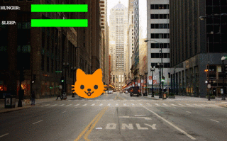

Key Events
Students are introduced to key events, and use if-then-else expressions to write a key-event handler that moves an image left and right as part of an interactive animation.
|
Product Outcomes |
|
|
Materials |
event-
something that happens outside of a running program, which the program can respond to
handler-
Connects an event (like a tick or keypress) and a function within a reactor
reactor-
a value that contains a current state, and functions for updating, drawing, and interacting with that state
| 2D Character Movement | 45 minutes |
Overview
Students learn about events, and add key-event handling to their games.
Launch
We’ve already seen one kind of interactivity in our programs: getting the next state from the current state on a tick-event. This is perfect for animations that happen on their own, without any user intervention. In a game, that might be clouds moving across the sky or a ball bouncing on its own. An important kind of behavior in interactive programs is to respond user input, such as keypresses. A keypress, like the tick of a clock, is a kind of event, and we’ll re-use the idea of an event handler like on-tick and a function like next-state-tick. For key-events, the event handler is called on-key, and our function next-state-key will compute the next state from the current one after a key event. We’re going to use this idea to build up a reactor with a character moving in two dimensions, where the movement is triggered by keypresses.
Open up the Moving Character Starter File.
It contains a data block for representing a character’s position (CharState) that has an x and y position.
Write an example instance of a CharState where both the x field and the y field are between 100 and 500. Give it the name middle. We’ve filled in a picture of Sam the Butterfly from Bootstrap:Algebra. There is a drawing function called draw-state provided that simply draws the character image on a white background at the x and y coordinate in a CharState.
Run the program, and use draw-state to draw the example instance you created above. Did it appear where you expected?
This is a reminder that it’s often useful, when working on programs that use data to represent positions in an image, to make sure we understand what values in the data structure correspond to which drawing behavior.
Write an example instance that represents the butterfly in the top-right corner of the window. Give it a meaningful name of your own choice. Re-run the program, and check using draw-state that it showed up where you expect.
There is also a contract for a function next-state-key, which looks like:
# next-state-key :: CharState, String -> CharState
# Moves the character by 5 pixels
# in the corresponding direction
# if an arrow key ("up", "left", "down", or "right")
# is pressed, & leaves the character in place otherwiseHow does the contract of next-state-key differ from the contract of next-state-tick in your previous programs?
It is different from the contract for next-state-tick (which handles tick events) in an important way. When a key event happens, the next state may differ depending on which key was pressed. That means the next-state-key function needs both the current state and which key was pressed as parts of its domain. That’s why next-state-key has an additional String input, which represents the key pressed by the user.
Create an example instance that corresponds to the position 5 pixels to the right of the example instance you wrote above. Use draw-state to check it, as before.
This gives us a good input and output test for the examples block when working on next-state-key. What call to next-state-key should connect these two example instances?
Investigate
Use the Design Recipe to fill in your examples and definition of next-state-key. Use the sample instances you created before in the examples block.
It’s an important point that next-state-key takes in an extra piece of information: the pressed key. This makes it much richer in terms of its purpose statement, which should describe what different keys ought to do to the state of the reactor. Students will create something like this completed file by adding a next-state-key function
Once you’ve implemented next-state-key, experiment with it in the Interactions Area:
-
Try
draw-state(next-state-key(middle, "left")). How is the output different fromdraw-state(middle)? -
Try using a few different calls to
next-state-keyto move the character several times, then draw it. For example:draw-state(next-state-key(next-state-key(middle, "left"), "up"))
As with tick-events, we can manually pass keypress strings into this function, see what the next state would be, and even draw that state to see what it looks like. That’s great, but we still want to hook this function up to a reactor, so that it actually handles keypresses from a user playing the game. To do this, we need to create a reactor use on-key to specify that our next-state-key function should be called when the user presses a key (we don’t need to specify an on-tick handler, since for now the only movement in our program comes from keypresses). Our reactor with a to-draw and on-key handler looks like this:
char-react = reactor:
init: middle,
to-draw: draw-state,
on-key: next-state-key
endMake your program create a reactor by that uses the on-key handler with the next-state-key function you just implemented. Run the program and use interact(char-react) to start the reactor. Does it work the way you expected? If it doesn’t, check:
-
Does the program have any typos or syntax errors?
-
Do the examples of
next-state-keymatch what you expect, creating a newcharinstance with appropriate x and y values? -
Do the examples pass the implementation of
next-state-key? -
Did you remember to add
on-keyto the reactor? -
Did you remember to re-run the program and use
interactto start the animation?
With this working, you can see the behind-the-scenes work that was going on in Sam the Butterfly from Bootstrap:Algebra. To get to the same point as in Bootstrap:Algebra, we’d next implement is-onscreen to check if Sam has left the board, and use it in next-state-tick.
Synthesize
Act out a reactor with key-events. You will need four students: one who acts as the next-state-key function, one who acts as the keyboard (you could also have the class act as a keyboard by having students shout out keys), one who acts as the reactor, and one who acts as the draw-state function. Give each student a few sheets of paper and something to write with.
When a key is "pressed" by the keyboard, the reactor write the current state and the key that was pressed, then shows their paper to next-state-key. next-state-key produces a new state based on the current state and the key, writes it down, and then hands the new state back to the reactor. The reactor discards their old state, replacing it with the new one, and shows the new one to draw-state. draw-state produces an image for the reactor to post, and draws it on paper. They hand the image to the reactor, who holds it up as the new frame in the animation. We recommend not having a next-state-tick function for this activity, to keep the focus on key events. You can add a on-tick handler in a separate stage when talking through games which have both time- and key-based events.
Optional: implement boundaries to keep character onscreen, using the same ideas as safe-left and safe-right from before. You can also write safe-top and safe-bottom, and use all of them to keep the character fully on the screen.
Optional: use num-to-string and text to display the position at the top of the window.
| Combining Ticks and Keypresses | 45 minutes |
Overview
This activity introduces students to Reactor programs that use key-events and tick events. Students create a "digital pet", which responds to key commands but also changes state on its own.
Launch
Now, you’ve seen how to use functions to compute the next state in a game or animation for both tick and key events. We can combine these to make an interactive “digital-pet” from scratch!
Open the Virtual Pet Starter File. Run it. You will see a frame come up, showing a cat face and green status bars for the cat’s sleep and hunger.
Notice that not much is happening! To make this game more interesting, we want to add three behaviors to it:
-
as time passes, the hunger and sleep values should decrease
-
a human player should be able to increase hunger and sleep through keypresses
-
the image of the cat should change when hunger and sleep both reach 0 (and the player loses the game)
Investigate
In this lesson, you will extend the animation three times, once for each of these behaviors, by adding or changing the functions that make up an animation. To do this, you will use the Animation Extension Worksheet three times. Note that none of these should require adding any new fields to the data definition, just adding and editing functions like next-state-tick, next-state-key, and draw-state. We will walk you through the first use of the animation extension worksheet, then let you try the other two on your own.
Extension 1: Decrease Hunger and Sleep on Ticks
For this extension, we want to decrease the hunger by 2 and the sleep by 1 each time the animation ticks to a new frame.
Open your workbook to Animation Data Worksheet and #<eof>, which shows you the extension worksheet filled in for this extension.
In this filled-in worksheet, the description from the problem is written down into the "goal" part of the worksheet. This is like the “purpose statement” for the feature.
Think about what sketches you would draw to illustrate the animation with this new behavior. Then check out the ones we drew on the example worksheet. Notice that they focus on the bars having different lengths.
Next, we consider the tables that summarize what now changes in the animation.
What changes between frames now that didn’t in the starter file for the virtual pet?
The worksheet identifies that both hunger and sleep are changing in new ways. Since they aren’t new fields, this feature is completely dependent on existing data. We therefore leave the second table empty (since we aren’t adding new fields).
Next, we identify the components that we need to write or update. We don’t need to change the data definition at all, because no new fields were added. We may need to update the draw-state function, since the size of the bars changes. We definitely need to write the next-state-tick function, which doesn’t yet exist. We do not need to address anything about keypresses with this feature, so next-state-key is untouched. Since next-state-tick has been added for this feature, we need to add a on-tick handler to the reactor.
Now that we’ve planned what work needs to be done (on paper), we can start thinking about the code. As always, we write examples before we write functions, so we are clear on what we are trying to do.
Come up with two example instances of PetState that illustrate what should happen as we change the sleep and hunger fields. You can see the ones we chose on the worksheet. What’s another good example for us to use in coding and testing?
In our samples, we estimate a bit from looking at the pictures, but note that we pick numbers that would work with the desired behavior — MIDPET represents the state after 25 ticks, because hunger is 50 less (decreased by 2 each tick), and sleep is 25 less (decreased by 1 on each tick). The LOSEPET sample instance corresponds to the state when both hunger and sleep values are 0.
Use your sample instances to write examples of the next-state-tick function, which we marked as a to-do item on the first page of the worksheet.
Now we need to use this information to edit the current code, checking off the boxes we identified as we go.
Look at the draw-state function: how will it need to change to draw boxes for the sleep and hunger values?
The draw-state function already does this, so we can check the draw-state changes off as being done (without doing additional work).
Develop next-state-tick, using the contract in the starter file and the examples from the worksheet.
Once we’ve finished using the design recipe to implement next-state-tick, we can check off its box. Finally, we need to add the handler to the reactor so the reactor calls the function we just wrote on tick events.
Edit the pet-react reactor to include next-state-tick alongside the on-tick handler.
You should have ended up with something like this:
pet-react = reactor:
init: FULLPET,
on-tick: next-state-tick,
to-draw: draw-state
endMake sure you get a working animation with bars that decrease before moving on, like this:

{kind=link}
Modification 2: Key Events
Next, we’ll add key events to the game so the player can increase them so they don’t reach zero!
Turn to Animation Data Worksheet and ../../lessons/re-key-events/pages/animation-worksheet-samples.html in your workbook. Fill in the first page to plan out the following extension: On a keypress, if the user pressed “f” (for “feed”), hunger should increase by 10. If the user pressed “s” (for “sleep”), sleep should increase by 5. If the user presses any other keys, nothing should change.
As you fill in the worksheet, think about useful sketches that capture this new feature, whether you need new fields, and which functions are effected.
When you’ve implemented next-state-key, you can add it to the reactor at the bottom of the file with:
pet-react = reactor:
init: FULLPET,
on-key: next-state-key,
on-tick: next-state-tick,
to-draw: draw-state
endand test out your game!
Modification 3: Change Pet Image When Game is Lost
When any bar reaches zero, the game is lost and your pet is sad — make the picture change to show the player this! In addition, when the game is lost, the “f” and “s” keys shouldn’t do anything. Instead, the user should be able to press the “r” key (for “restart”), to reset hunger and sleep 100, and start playing again. Use the an animation-extension worksheet to plan out your changes.
Synthesize
You now know everything you need to build interactive games that react to the keyboard, draw an image, and change over time! These are the fundamentals of building up an interactive program, and there are a lot of games, simulations, or activities you can build already. For example, you could build Pong, or the extended Ninja Cat, a more involved Pet Simulator, a game with levels, and much, much more.
Some of these ideas are more straightforward than others with what you know. The rest of the workbook and units are designed to show you different features that you can add to interactive programs. You can work through them all if you like, or come up with an idea for your own program, and try the ones that will help you build your very own program!
Additional Exercises
-
Find your own images to create a different virtual pet Stop the bars from overflowing some maximum (produce something like this completed game).
-
Add an
x-coordto thePetStateso the pet moves around, either on keypress or based on clock ticks. -
Add a
costumeto thePetState, then change the draw-pet function so that it changes the costume based on the pet’s mood (if a-pet.hunger <= 50, show a picture of the pet looking hungry)
These materials were developed partly through support of the National Science Foundation,
(awards 1042210, 1535276, 1648684, and 1738598).  Bootstrap by the Bootstrap Community is licensed under a Creative Commons 4.0 Unported License. This license does not grant permission to run training or professional development. Offering training or professional development with materials substantially derived from Bootstrap must be approved in writing by a Bootstrap Director. Permissions beyond the scope of this license, such as to run training, may be available by contacting contact@BootstrapWorld.org.
Bootstrap by the Bootstrap Community is licensed under a Creative Commons 4.0 Unported License. This license does not grant permission to run training or professional development. Offering training or professional development with materials substantially derived from Bootstrap must be approved in writing by a Bootstrap Director. Permissions beyond the scope of this license, such as to run training, may be available by contacting contact@BootstrapWorld.org.